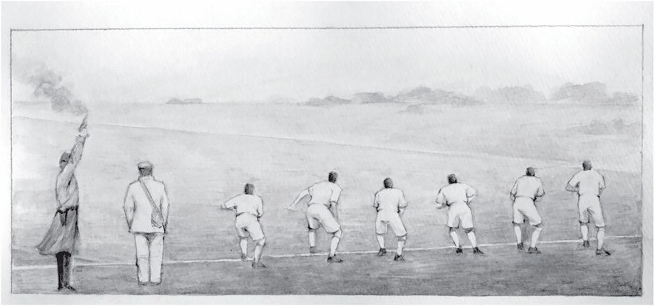
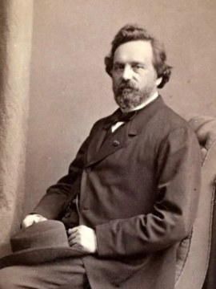
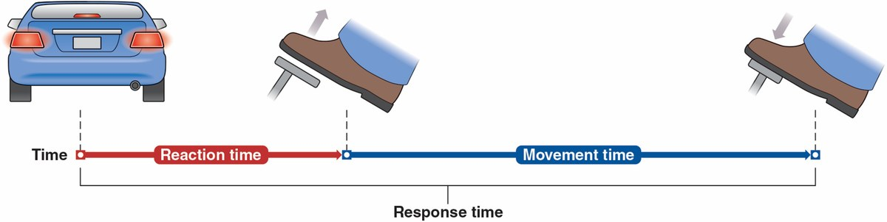
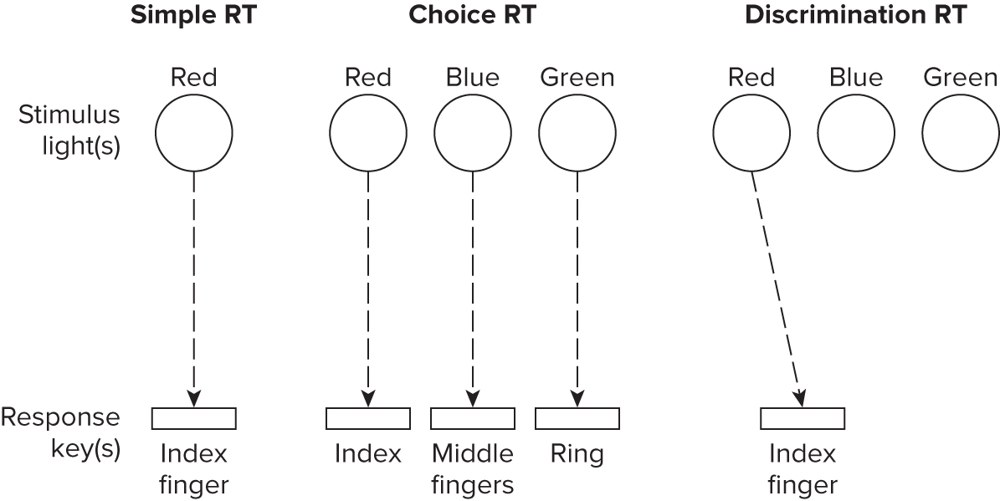
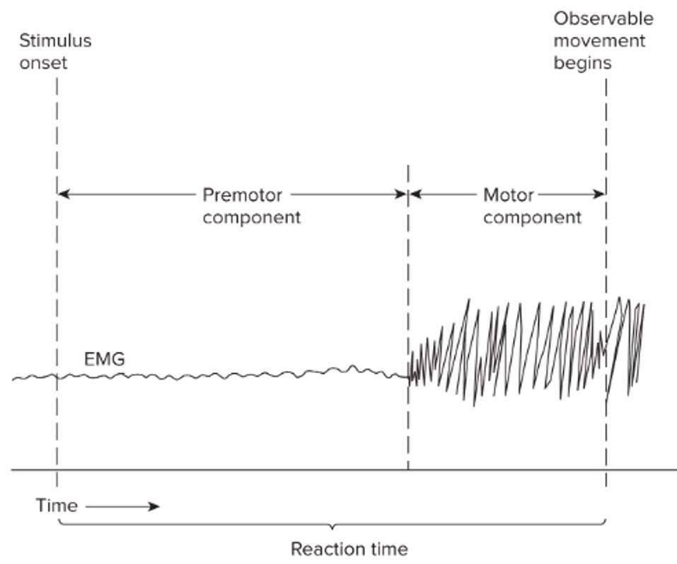

Measuring Preparation: Reaction Time
If preparation happens invisibly, inside the nervous system, how do we study it? The answer is a stopwatch — and a clever way of splitting the time apart.
By the end of this lesson you will be able to…
- 1Name the three stages of information processing and explain why they can’t be observed directly.
- 2Define reaction time (RT) and explain why it indexes preparation.
- 3Lay out the RT paradigm: foreperiod, RT, movement time, response time.
- 4Explain fractionating RT — premotor vs. motor — and why premotor RT is the better measure.
Three stages of information processing
To initiate an action, the system must pass through at least three stages (Proctor, 2004). Click each to reveal it — all three to continue:
We can’t directly observe these stages happening inside the brain. So researchers study them indirectly — by watching how reaction time changes when they manipulate factors known to load one stage or another.
Johnson, A., & Proctor, R. W. (2004). Attention: Theory and Practice. SAGE. View book →
Reveal all three stages to continue.
Donders: the mind needs a minimum time
Franciscus Donders (1818–1889), a Dutch physician, was the first to demonstrate that the motor control system needs a minimum amount of time to prepare an intended action — mental events have a measurable duration.
Reaction time (RT) is an index of the preparation required to produce an action.


Franciscus Donders (1818–1889)
His insight — that you can measure mental processing by timing responses — still underlies RT research. The Donders Institute for Brain, Cognition, and Behaviour at Radboud University is named for him.
What reaction time is — and isn’t
- •A common measure of how long it takes to prepare and initiate a movement.
- •RT is only the time before movement begins — it does not include the movement itself.
- •A stimulus or “go signal” is the cue to act — and it can be any sensory modality (visual, auditory, tactile).
A familiar example: braking in traffic. The brake lights ahead are the go signal.

RT as a performance measure
RT has a long history as a popular measure of human motor-skill performance — because it captures something no other simple number does. Flip each card to see what RT is used for:
Each of these is really a question about preparation — and RT is the window onto it.
Three types of RT situations
How much processing RT captures depends on the setup — how many signals, and how many responses:

One signal, one response.
You make one response — but you’re uncertain which it will be. Each possible signal is mapped to a specific effector (index, middle, ring finger).
Many signals, but only one of them calls for a response — you must tell the “go” signal from the rest.
More choices = more to process = longer RT (a preview of Hick’s law in Lesson 4).
The reaction-time paradigm
In the lab, an RT trial is built from a precise sequence of events. Four intervals are defined between them:
Foreperiod
Warning signal → the “go” signal.
Reaction time
“Go” signal → response initiation.
Movement time
Initiation → completion of the movement.
Response time
“Go” signal → completion (RT + MT).
On the next screen, explore how they line up in time.
The RT paradigm timeline
Here are the four events along a single timeline. Tap each interval to highlight it and read what it measures. Explore all four to continue.
Explore all four intervals to continue.
Which interval is it?
A sprinter is in the blocks. The gun fires; 0.14 s later their muscles start to drive; it then takes 0.55 s to fully clear the blocks. The 0.14 s from the gun to the first push is which interval?
Make a choice to continue.
Fractionating reaction time
Here’s the clever part. Even the short window we call RT isn’t one thing — it hides two sub-intervals. Using EMG (electromyography, which records muscle electrical activity), researchers can split RT at the instant the muscle first fires:
Go signal → first muscle activity
From the go signal to the first rise in agonist EMG. This is the perceptual & cognitive work — identify, select, program.
First muscle activity → movement
From first muscle activation to the moment observable movement begins — the electromechanical delay of the muscle itself.

Where RT splits in two
Follow the timeline: the go signal fires, the brain processes information (premotor), the muscle switches on (EMG rises), and only then does movement actually start after a brief electromechanical delay (motor):
The EMG stays quiet during the premotor period, then bursts — marking the split between “thinking” time and “muscle” time.
Why is premotor RT the better measure?
Here’s the key question from the lecture. Think about your answer first, then reveal the explanation.
Why is premotor time a better measure of information processing than simple (whole) reaction time?
Reveal the answer to continue.
A researcher makes a task harder to decide between responses (loading the response-selection stage), but the muscles and movement stay identical. Where will the effect show up most cleanly?
Answer to continue.
What you can now do
- 1Name the three stages (identify, select, program) and explain why they’re studied indirectly through RT.
- 2Define RT as the pre-movement index of preparation (Donders).
- 3Lay out the paradigm: foreperiod, RT, MT, response time.
- 4Explain fractionating RT and why premotor time best isolates information processing.
The toolkit: RT — and especially premotor RT — is how we make invisible preparation measurable.
Lesson 3: Performer Characteristics — how experience, age, alertness, attention, and anticipation change the preparation time we just learned to measure.